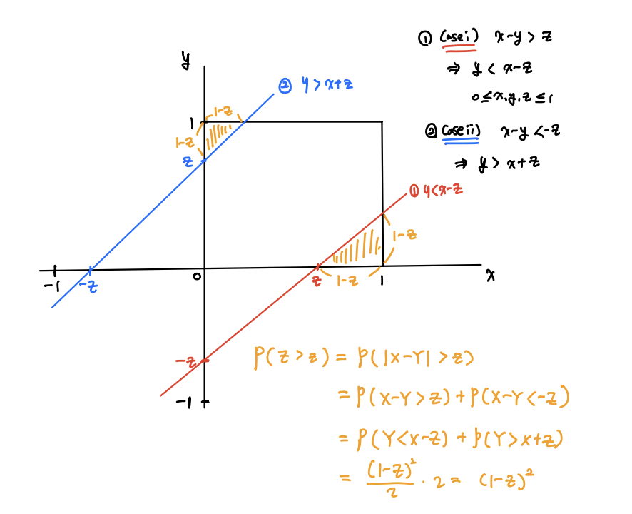

0.4156378600823045과제5
Q1. 다항분포의 조건부밀도함수
ref: 4차시 과제 참고
\((X_1, X_2, X_3) \sim MULT(n, p_1,p_2,p_3)\)일 때 \(X_1|X_2=x_2\)의 조건부 확률밀도함수를 구하시오.
(sol)
(간단한 방법)
\[f_{X_1|X_2}(x_1|x_2) = \frac{f_{X_1,X_2}(x_1,x_2)}{f_{X_2}(x_2)}\]
step1
우리가 관심있는 사건은 \(X_1\)이라 한다면 관심없는 두 사건 \(X_2, X_3\)를 하나로 생각한다면, 관심있는 사건, 관심없는 사건 두가지의 결과로 이루어진 이항분포라고 할 수 있다.
- \(X_1 \sim B(n,p_1)\)
- \(X_2 \sim B(n,p_2)\)
step2
- 3가지 결과만 나오는 경우 \(X_1,X_2\)의 결합 pdf는 다음과 같이 정의할 수 있다. (\(X_1, X_2\)를 알면 자연스럽)게 \(X_3\)를 알 수 있다.
\[\begin{align*} f_{X_1,X_2}(x_1,x_2) &= P(X_1=x_2, X_2=x_2)\\ &= P(X_1=x_1, X_2=x_2, X_3 = n-x_1-x_2) \\ &= \frac{n!}{x_1!x_2!(n-x_1-x_2)!}p_1^{x_1}p_2^{x_2}p_3^{n-x_1-x_2}\end{align*}\]
step1에서 \(X_1\)과 \(X_2\)는 베르누이 시행을 독립적으로 \(n\)번 반복할 때 각 시행에서의 관심사건의 확률이 \(p_1, p_2\)인 이항분포를 따름을 알 수 있었다. 이를 이용하면 \(X_2\)의 marginal pdf를 구할 수 있다.
\[f_{X_2}(x_2) = \frac{n!}{x_2!(n-x_2)!}p_2^{x_2}(1-p_2)^{n-x_2}\]
step3
이전 단계에서 구한 \(X_1,X_2\)와 결합pdf와 \(X_2\)의 marginal pdf를 이용하면 \(X_1|X_2=x_2\)의 조건부확률밀도함수를 구할 수 있다.
\[\begin{align*}f_{X_1|X_2}(x_1|x_2) &= \frac{f_{X_1,X_2}(x_1,x_2)}{f_{X_2}(x_2)}\\ &= \frac{\frac{n!}{x_1!x_2!(n-x_1-x_2)!}p_1^{x_1}p_2^{x_2}p_3^{n-x_1-x_2}}{ \frac{n!}{x_2!(n-x_2)!}p_2^{x_2}(1-p_2)^{n-x_2}} \\ &= \frac{(n-x_2)!}{x_1!(n-x_1-x_2)!}\left(\frac{p_1}{1-p_2}\right)^{x_1}\left(\frac{p_3}{1-p_2}\right)^{n-x_1-x_2}\\ &=\frac{(n-x_2)!}{x_1!(n-x_1-x_2)!}\left(\frac{p_1}{1-p_2}\right)^{x_1}\left(1-\frac{p_1}{1-p_2}\right)^{n-x_1-x_2}\\ &= \binom{n-x_2}{x_1}\left(\frac{p_1}{1-p_2}\right)^{x_1} \left(1-\frac{p_1}{1-p_2}\right)^{n-x_1-x_2}\\ &\sim B\left(n-x_2, \frac{p_1}{1-p_2}\right) \end{align*}\]
Q2. 변수변환 (정규분포)
\(X\sim N(\mu, \sigma^2)\)일 때 다음을 구하시오.
(1) \(Y = |X-\mu|\)의 확률밀도함수
(sol) Folded normal distribution과 비슷한듯.
\(X\)의 pdf는 \(f_X(x) = \frac{1}{\sqrt{2\pi}\sigma}\exp\left[-\frac{(x-\mu)^2}{2\sigma^2}\right]\) 이고,
\(Y\)의 cdf는 아래와 같다.
\(\begin{align*}F_Y(y) = P(Y\leq y) &= P(|X-\mu|\leq y) \\ &= P(\mu-y \leq X \leq \mu+y)\\ &= F_X(\mu+y) - F_X(\mu-y)\end{align*}\)
\(\begin{align*}f_Y(y) = \frac{d}{dy}F_Y(y) &= f_X(\mu+y) + f_X(\mu-y) \\ &= \frac{1}{\sqrt{2\pi}\sigma}e^{-\frac{(\mu+y-\mu)^2}{2\sigma^2}} + \frac{1}{\sqrt{2\pi}\sigma}e^{-\frac{(\mu-y-\mu)^2}{2\sigma^2}} \\ &= \frac{1}{\sqrt{2\pi}\sigma}e^{-\frac{y^2}{2\sigma^2}} + \frac{1}{\sqrt{2\pi}\sigma}e^{-\frac{y^2}{2\sigma^2}} \\ &=2 \frac{1}{\sqrt{2\pi}\sigma}e^{-\frac{y^2}{2\sigma^2}}, \quad y\geq 0\end{align*}\)
(2) \(Y=\exp(X)\)의 확률밀도함수
(sol) 로그정규확률밀도함수
\(X\)의 pdf는 \(f_X(x) = \frac{1}{\sqrt{2\pi}\sigma}\exp\left[-\frac{(x-\mu)^2}{2\sigma^2}\right]\) 이고,
\(Y\)의 cdf는 \(F_Y(y) = P(Y\leq y) = P(e^X\leq y) = P(X\leq \ln y) = F_X(\ln y)\) 이므로, \(Y\)의 pdf는 아래와 같다.
\(\begin{align*}f_Y(y) &= \frac{d}{dy}F_Y(y) = \frac{1}{y}f_X(\ln y)\\ &= \frac{1}{\sigma y \sqrt{2\pi}}\exp\left[-\frac{(\ln y-\mu)^2}{2\sigma^2}\right], \quad 0<y<\infty \end{align*}\)
Q3. 변수변환 (지수분포) – 틀림
한 개의 전자 시스템에 두 가지 다른 유형의 구성 요소가 각각 하날씩 공동으로 작동하고 있다. \(Y_1\)과 \(Y_2\)는 각각 유형 I 및 유형 II의 구성요소의 수명길이를 나타낸다고 한다. \(Y_1\)과 \(Y_2\)의 결합확률밀도함수가
\[f_{Y_1,Y_2}(y_1,y_2) = \frac{1}{8}y_1 e^{-(y_1+y_2)/2} I(y_1>0, y_2>0)\]
로 주어졌을 때, 다음을 구하시오. (측정값은 백 시간 단위.)
(1) \(Z = Y_1 + Y_2\)의 확률분포
\(\left\{\begin{matrix} \begin{align*}&Z_1 = Y_1 + Y_2 \\ &Z_2 = Y_2 \\ \end{align*}\end{matrix}\right. \Rightarrow \left\{\begin{matrix} y_1 = z_1-z_2 \\ y_2 = z_2 \quad \quad \end{matrix}\right.\to J = \begin{vmatrix}\frac{\partial y_1}{\partial z_1} & \frac{\partial y_1}{\partial z_2} \\ \frac{\partial y_2}{\partial z_1} & \frac{\partial y_2}{\partial z_2} \end{vmatrix}= \begin{vmatrix} 1 & -1 \\ 0 & 1\end{vmatrix} = 1\)
\(\begin{align*}g_{z_1,z_2}(z_1,z_2) &= f_{Y_1,Y_2}(z_1-z_2, z_2)|J|\\ &= \frac{1}{8}(z_1-z_2)e^{-(z_1-z_2+z_2)/2}, \quad I(0<z_2<z_1) \\ &= \frac{1}{8}(z_1-z_2)e^{-z_1/2}, \quad I(0<z_2<z_1)\end{align*}\)
(이부분 빼먹음! : \(z_1\)의 marginal pdf를 구해야한다…)
\(\begin{align*}f_{Z_1}(z_1) &=\int_{0}^{z_1}g_{Z_1,Z_2}(z_1,z_2) dz_2 \\ &= \int_{0}^{z_1}\frac{1}{8}(z_1-z_2)e^{-z_1/2}dz_2 \\ &= \frac{1}{8}e^{-z_1/2}\int_{0}^{z_1}(z_1-z_2)dz_2 \\ &= \frac{1}{8}e^{-z_1/2}\left[z_1z_2-\frac{1}{2}z_2^2\right]_0^{z_1}\\ &= \frac{1}{8}e^{-z_1/2}\left[\frac{1}{2}z_1^2\right] = \frac{z_1^2e^{-z_1/2}}{16}\space I(z_1>0)\end{align*}\)
(2) \(U = Y_2/Y_1\)와 \(V=Y_1\)의 결합확률밀도함수
\(y_1 >0 , y_2 > 0\) \(\Rightarrow\) \(u>0 , v>0\)
\(\left\{\begin{matrix} \begin{align*}&U = Y_2/Y_1 \\ &V = Y_1 \\ \end{align*}\end{matrix}\right. \Rightarrow \left\{\begin{matrix} y_1 = v \\ y_2 = uv \end{matrix}\right.\to J = \begin{vmatrix}\frac{\partial y_1}{\partial u} & \frac{\partial y_1}{\partial v} \\ \frac{\partial y_2}{\partial u} & \frac{\partial y_2}{\partial v} \end{vmatrix}= \begin{vmatrix} 0 & 1 \\ v & u\end{vmatrix} = |-v| = v\)
\(\begin{align*}g_{u,v}(u,v) &= f_{Y_1,Y_2}(v,uv)|J|\\ &= \frac{1}{8}ve^{-(v+uv)/2} v, \quad I(u>0)I(v>0) \\ &= \frac{1}{8}v^2e^{-(v+uv)/2} , \quad I(u>0)I(v>0)\end{align*}\)
(2)의 결과를 이용하여 \(U\)의 주변확률밀도함수
\(\begin{align*}g_u(u) &= \int_{-\infty}^\infty \frac{1}{8}v^2e^{-(v+uv)/2} I(u>0)I(v>0)dv \\ &= \frac{1}{8}I(u>0)\int_{0}^\infty v^2e^{-(v+uv)/2} dv \\ &= \frac{(1+u)^3}{4} \quad I(u>0)\end{align*}\)
Q4. 변수변환 (균일분포)
두 명의 경계병이 1마일 길이의 도로를 순찰하도록 지시받았다고 한다. 경계병은 도로 상에서 서로 독립적으로 선택된 지점으로 파견되는데, 경계병이 할당된 위치에 도달할 때 서로 1/2마일 이내에 있을 확률을 구하시오.
ref: Find the distribution of |X−Y| if X and Y are i.i.d. uniform on [0,1]
\[f_{X,Y}(x,y) = 1 \quad I(0 \leq x, y \leq 1)\]
$X = $ 경계병1이 할당된 위치, $Y = $ 경계병2가 할당된 위치라고 하자.
$X U(0,1),YU(0,1) $이며 서로 independent 하다.
\(Z = |X - Y|, \space 0\leq z \leq 1\)라고 할때, \(P(Z\leq 1/2)\) 를 구하면 된다.
\(\begin{align*}P(Z>z) &= P(|X-Y|>z) \\ &= P(X-Y>z) + P(X-Y<-z) \\ &= P(Y<X-z) + P(Y>z+X) \\ &= \frac{(1-z)^2}{2} + \frac{(1-z)^2}{2}\\ &= (1-z)^2,\quad 0 \leq z \leq 1\end{align*}\)

따라서 \(Z\)의 cdf는 다음과 같다.
\(\begin{align*}F_Z(z) &= 1-P(Z>z) \\ &= 1-(1-z)^2 \\ &= 1-(1-2z+z^2) = 2z-z^2, \quad 0\leq z <1\end{align*}\)
\(\therefore F_Z(1/2) = P(Z\leq 1/2) = 1-1/4 = 3/4\)
Q5. 변수변환 (기하분포)
\(X\)와 \(Y\)는 서로 독립이고 동일한 기하분포를 따른다고 할 때 다음을 구하시오.
\(X\sim Geo(p_1), Y\sim Geo(p_2)\) 이며 서로 independent하다. 서로 동일한 기하분포를 따른다고 했으므로 여기서는 \(p_1= p_2 = p\)이다.
\(\text{pmf} : f(k) = (1-p)^{k-1}p, \quad k=1,2,\dots\)
풀수 있는 방식은 1)누적분포접근법 2) 변수변환접근법 이 있지만, 지금 푼 방식은 쉽긴하지만 확장하기 어렵다. –
\(\begin{align*}P(X=Y) =\underset{x=y}{\sum\sum} f_{X,Y}(x,y) &= \underset{\begin{pmatrix} x=y \\ x=1,2,\dots \\ y=1,2,\dots\end{pmatrix}}{\sum\sum} p^2(1-p)^{x+y-2} \\ &\overset{\text{X=Y}}{=}\sum_{k=1}^\infty p^2(1-p)^{2k-2}=\sum_{k=1}^\infty p^2(1-p)^{2(k-1)} \\ &= \frac{}{}\end{align*}\)
(1) \(P(X=Y)\)
ref: If Two Independent Geometric Random Variables are equal
\(\begin{align*}P(X=Y) &= P\left(\bigcup_{x=1}^\infty \{X=Y, X=k\}\right) \\ &=\sum_{k=1}^\infty P(X=Y, X=k) \\ &= \sum_{k=1}^\infty P(X=k)P(Y=k) \\ &= \sum_{k=1}^\infty (1-p_1)^{k-1}p_1(1-p_2)^{k-1}p_2 \\ &= p_1p_2\sum_{k=0}^\infty\{(1-p_1)(1-p_2)\}^k \\ &= \frac{p_1p_2}{1-(1-p_1)(1-p_2)}, \quad 0\leq p_1,p_2 \leq 1\end{align*}\)
동일한 기하분포를 따른다고 했으므로 다시 정리하면,
\[P(X=Y) = \frac{p^2}{1-(1-p)^2}=\frac{p}{2-p}, \quad 0\leq p \leq 1\]
(2) \(P(X-Y = 1)\)
ref: Distribution of X-Y when X and Y are independent geometric
\(\begin{align*}P(X-Y=1) &= \sum_{k=1}^\infty P(Y=k,X=1+k) \\ &=\sum_{k=1}^\infty P(Y=k)P(X=1+k) \\ &= \sum_{k=1}^\infty (1-p)^{k-1}p(1-p)^{1+k-1}p \\ &= p^2\sum_{k=1}^\infty (1-p)^{2k-1} \\ &= \frac{p^2(1-p)}{1-(1-p)^{2}}=\frac{p^2(1-p)}{p(2-p)}=\frac{p(1-p)}{2-p}\end{align*}\)
(3) \(U = X-Y\)라고 할 때 \(U\)의 확률밀도함수 - u가 음수일때 주의
case1 : \(X-Y\geq 0, u\geq 0\)
\(\begin{align*}P(U=u, u\geq 0) &= P(X-Y=u, u\geq 0) \\ &= \sum_{k=1}^\infty P(Y=k, X=u+k) \\ &=\sum_{k=1}^\infty P(Y=k)P(X=u+k) \\ &= \sum_{k=1}^\infty (1-p)^{k-1}p(1-p)^{u+k-1}p \\ &= p^2(1-p)^u\sum_{k=1}^\infty (1-p)^{k-1}(1-p)^{k-1}\\ &= p^2(1-p)^u\sum_{k=1}^\infty ((1-p)^{2})^{k-1} \\ &= \frac{p^2(1-p)^u}{p(2-p)}=\frac{p(1-p)^u}{2-p}\end{align*}\) \(\to\) OK
case2 : \(X-Y<0, u\leq 0\)
\(\begin{align*}P(U=u, u\leq 0) &= P(X-Y=u, u\leq 0) \\ &= \sum_{k=1}^\infty P(X=k, Y=k-u) \\ &=\sum_{k=1}^\infty P(X=k)P(Y=k-u) \\ &= \frac{p^2(1-p)^{-u}}{p(2-p)}=\frac{p}{(1-p)^u(2-p)}\end{align*}\) \(\to\) Try again!
\(P(U=u) = \begin{cases} P(X=k+u, Y=k)= \frac{p(1-p)^u}{2-p} & \text{ if } u \geq 0 \\ P(X=k, Y=k-u) = \frac{p}{(1-p)^u(2-p)} & \text{ if } u < 0 \end{cases}\)
수업시간 풀이 – \(u\)가 음수일 때 주의하자.
case2번 부분에서 먼저 내가 푼 방식으로 다시 풀어보자.
\(u\)가 음수일때는 제약조건이 하나 더 붙는다. \(x-y=u \to x=y+u\) 만약 \(u\)가 엄청나게 작은 음수가 된다면 \(x\)가 음수가 되버리는데 \(x\)는 음수일 수가 없다. 따라서 \(y+u\geq 1\) 이라는 제약조건이 필요하다.
Q6. 베타분포 (잘 모르겠음..)
어떤 합성물의 알코올 비율 \(Y\)는 다음 확률밀도함수를 따르는 확률변수라고 하자.
\[f(y) = 20y^3(1-y)I(0<y<1)\]
그 합성물의 판매가는 알코올 함량에 따라 결정된다고 한다. \(1/3 < y < 2/3\)이면 1갤런 당 \(C_1\)달러, 그렇지 않으면 \(C_2\) 달러에 판매된다. 생산비가 갤런 당 \(C_3\) 달러라면, 갤런당 판매수익의 확률분포를 구하시오.
sol 수업시간 풀이
\(Y \sim \text{Beta}(4,2)\)
\(X=\)판매수익 이라 놓자.
\(X = (C_1-C_3)I(1/3<y<2/3) + (C_2-C_3)I(Y\leq 1/3 \text{ or } Y\geq 2/3)\)
\(\Rightarrow \begin{cases} C_1-C_3 & ,1/3<Y<2/3 \\ C_2-C_3 &, o.w\end{cases}\)
갤런당 판매수익의 확률분포는 다음과 같다.
\(\Rightarrow \begin{cases} P(X=C_1-C_3) = P(1/3<Y<2/3) = \frac{101}{243} \\ P(X=C_2-C_3) = 1-P(1/3<Y<2/3)=1-\frac{101}{243}=\frac{142}{243}\end{cases}\)
\(\begin{align*}P(1/3 < Y < 2/3) &= \int_{1/3}^{2/3} 20y^3(1-y)I(0<y<1) \\ &= 20\int_{1/3}^{2/3} (y^3-y^4)\\ &=20\left(\frac{1}{4}y^4 -\frac{1}{5}y^5\right)\biggr\rvert_{1/3}^{2/3} \\ &=\frac{101}{243}\end{align*}\)
(검산)